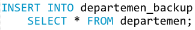

Jobsheet-11: MySQL – Data Manipulation Language (DML)
Topik
Data Manipulation Language (DML) pada DBMS MySQL
Mahasiswa diharapkan dapat:
- Memahami penggunaan SQL statement INSERT.
- Memahami penggunaan SQL statement UPDATE.
- Memahami penggunaan SQL statement DELETE.
Pendahuluan
DML merupakan istilah untuk beberapa sintaksis (syntax) dari SQL yang digunakan untuk melakukan perubahan pada data (isi tabel-tabel) dalam suatu database. DML terdiri dari 3 klausa utama yaitu:
- INSERT : Menambah baris baru pada sebuah tabel
- UPDATE : Mengubah nilai suatu baris pada sebuah tabel.
- DELETE : Menghapus suatu baris dari sebuah tabel.
Pada DML terdapat dua jenis bahasa, yaitu :
High-Level(Non_procedural) DML.
- Digunakan secara interaktif (interpreter)
Dapat dijadikan satu dengan general purpose programming language (embedded)
High-Level DML yang biasa digunakan secara interaktif disebut "Query Language".
Low-Level(Proedural) DML.
Digunakan secara embedded dalam suatu general purpose programming language
Bilamana kedua jenis DML diatas digunakan secara "embedded", maka : bahasa pemrograman yang digunakan disebut sebagai "Host Language" dan "DML-nya disebut "Sub Language"
Operasi INSERT
Operasi insert bertujuan untuk menyisipkan satu tuple baru ke dalam suatu relasi R.
Klausa pembentuk:
INSERTINTOVALUES
Format:
INSERT INTO nama_tabel (kolom1, kolom2, ...dst.) VALUES (nilai_kolom1, nilai_kolom2, ...dst.);INSERT INTO nama_tabel VALUES (nilai_kolom1, nilai_kolom2, ...dst.);[Salah satu dari kedua format sebelumnya], (nilai_kolom_kolom_baris1), (nilai_kolom_kolom_baris2), ...dst.
Operasi ini memungkinkan untuk melanggar empat jenis constraint sebagaimana dijelaskan berikut ini :
- DOMAIN Constraint dapat dilanggar jika suatu nilai attribute yang diberikan tidak ada dalam domain yang berkorespondensi dengan attribute tadi.
- KEY Constraint dapat dilanggar jika nilai key dalam tuple baru t sudah ada dalam tuple lain dalam relasi r(R).
- ENTITY INTEGRITY Constraint dapat dilanggar jika primary key dari tuple baru t adalah NULL
- REFERENTIAL INTEGRITY Constraint dapat dilanggar jika nilai dari suatu foreign key dalam t mengacu ke suatu tuple yang tidak ada dalam relasi yang diacu.
Ada dua pilihan tindakan yang dapat dilakukan jika ada satu atau lebih constraint yang dilanggar akibat operasi insert, yaitu :
- Menolak (reject) operasi insertion. Biasanya DBMS memberikan penjelasan mengapa proses insertion ditolak.
- Berusaha memperbaiki alasan penolakan proses insertion. Dimana insertion akan diterima jika user melakukan perubahan nilai-nilai attribute sehingga insertion diterima.
Operasi DELETE
Operasi delete bertujuan untuk menghapus satu atau beberapa tuple di dalam suatu relasi R. Operasi ini hanya dapat melanggar referential integrity, jika tuple yang dihapus diacu oleh kunci-kunci tamu dari tuple yang lain dalam basis data.
Klausa pembentuk:
DELETEFROMWHERE [opsional]
Format:
DELETE FROM nama_tabel WHERE nama_kolom_patokan [operator_perbandingan] nilai_patokan;DELETE * FROM nama_tabel; atau DELETE FROM nama_tabel;
Operator perbandingan/comparison operator dapat berupa: =, <, >, <=, >=, <>
Ada empat pilihan tindakan yang dapat dilakukan jika suatu deletion melanggar constraint yang telah ditentukan, yaitu :
- Menolak(reject) proses deletion.
- Berusaha untuk melakukan “cascade deletion”, yaitu dengan menghapus sejumlah tuple yang mengacu pada tuple yang akan dihapus.
- Melakukan modifikasi nilai attribute yang mengacu pada tuple yang dihapus, yaitu setiap nilai diset NULL atau diganti dengan nilai dari tuple lain yang valid sebagai acuan baru. Akan tetapi, bila attribute yang mengacu yang menyebabkan pelanggaran adalah bagian dari primary key, maka ia tidak dapat diset NULL (karena melanggar entity integrity).
- Kombinasi 2 dan 3.
Operasi UPDATE
Operasi update digunakan untuk merubah nilai-nilai satu atau lebih attribute dalam satu atau lebih tuple dalam sejumlah relasi R.
Klausa pembentuk:
UPDATESETWHERE [opsional]
Format:
UPDATE nama_tabel SET nama_kolom = nilai_baru WHERE nama_kolom_patokan [operator_perbandingan] nilai_patokan;UPDATE nama_tabel SET nama_kolom1 = nilai_baru1, nama_kolom2 = nilai_baru2, ...dst. WHERE nama_kolom_patokan [operator_perbandingan] nilai_patokan;
Operator perbandingan/comparison operator dapat berupa: =, <, >, <=, >=, <>
Operasi UPDATE bisa dilakukan pada tiga jenis attibut, dengan permasalahan yang berbeda sebagaimana berikut ini :
- Modifikasi nilai suatu foreign key, maka DBMS harus melakukan pengecekan bahwa nilai-nilai baru yang diberikan mengacu pada tuple yang ada dalam relasi-relasi yang dijadikan acuan.
- modifikasi nilai suatu primary key serupa dengan proses deletion satu tuple dan inserting yang lain pada tempat yang sama. Akibatnya, pilihan- pilihan seperti yang dilakukan pada operasi INSERT dan DELETE dapat dipakai agar modifikasi tidak melanggar constraint.
- modifikasi suatu attribute yang bukan primary key atau bukan foreign key biasanya tidak akan menimbulkan masalah. DBMS hanya perlu untuk mengecek apakah nilai-nilai baru yang diberikan mempunyai tipe data dan domain yang valid.
Praktikum – Bagian 1: Membuat Database untuk Percobaan
Perhatikan skema/model relasional/EER diagram dari database berikut.
Skema tersebut adalah sekema database pada sebuah sistem informasi yang digunakan oleh suatu perusahaan yang bergerak di bidang pembuatan perangkat lunak. Pertama-tama, buatlah database tersebut dengan mengeksekusi baris-baris kode DDL berikut.
Cek database Anda dengan perintah ‘SHOW TABLES’ untuk memastikan bahwa semua tabel sudah dibuat.
Buat 1 tabel backup untuk tabel departemen bernama departemen_backup. Tabel ini akan bermanfaat ketika bagian INSERT dan DELETE kita kerjakan.
Cek strukturnya.
Setelah selesai membuat database diatas, lanjutkan ke Praktikum – Bagian 2.
Praktikum – Bagian 2: Percobaan Statement INSERT
Untuk menambahkan data (mengisi) suatu tabel, digunakan statement (pernyataan) INSERT. Eksekusi SQL berikut untuk menambahkan 1 baris (record) baru pada tabel departemen.
Statement SQL tersebut menambahkan 1 baris baru ke tabel departemen pada kolom yang dinyatakan di dalam tanda kurung () pertama. Untuk melihat hasil SQL yang kita eksekusi tersebut, gunakan statement SELECT seperti berikut.
Pembahasan lebih lengkap mengenai SELECT dijadwalkan untuk disampaikan pada pertemuan berikutnya, namun secara umum, statement SELECT digunakan untuk menyajikan record-record yang ada pada suatu tabel. Karakter * akan menampilkan isi dari semua kolom yang ada pada tabel. Statement SELECT tersebut menghasilkan:
Apabila data di-insert-kan pada semua kolom tabel, maka kita dapat langsung menggunakan klausa VALUES tanpa harus menuliskan nama-nama kolom dahulu.
Untuk menambahkan beberapa kolom sekaligus dalam 1 statement digunakan statement dengan format seperti berikut.
Dan seperti berikut, jika hanya kolom tertentu saja yang akan diberi nilai.
Statement INSERT juga dapat dieksekusi dengan menggunakan klausa SET alih-alih VALUES.
Pada statement INSERT juga dapat digunakan klausa SELECT. Misalnya kita ingin menyalin semua baris pada tabel departemen ke tabel departemen_backup, maka kita SQL berikut dapat digunakan.

Sekarang penambahan data pada tabel karyawan dapat dilakukan karena data departemen sudah siap. Eksekusi SQL berikut ini untuk menambahkan beberapa data pegawai.
Setelah berhasil mengeksekusi SQL tersebut, lanjutkan ke Praktikum - Bagian 3.
Praktikum - Bagian 3: Percobaan Statement UPDATE
UPDATE digunakan untuk mengubah nilai suatu baris pada sebuah tabel. Format dasar statement ini adalah sebagai berikut:
Statement tersebut mengubah nilai SEMUA baris dari tabel departemen pada kolom nik_manajer dengan nilai 741104013. Apabila kita tampilkan isi tabel, maka sekarang semua manajer akan dikepalai oleh karyawan dengan nik tersebut.
Untuk mengubah nilai pada baris tertentu saja, kita tambahkan klausa WHERE pada statement UPDATE. Misalkan kita akan menjadikan karyawan dengan nip 7411040719 sebagai manajer pada departemen PKU, maka dapat digunakan SQL sebagai berikut:
Klausa WHERE tidak selalu hanya membatasi UPDATE pada 1 baris saja, ia juga bisa memberlakukan UPDATE pada banyak baris sekaligus. Semuanya tergantung pada kondisi yang kita tentukan. Statement berikut ini akan mengosongkan nik_manajer untuk semua departemen yang dikepalai oleh karyawan dengan nik 741104013.
Untuk mengubah beberapa kolom sekaligus dalam satu kali eksekusi statement UPDATE, dapat digunakan format berikut.
Kita juga dapat menggunakan statement UPDATE dengan SELECT. Misalkan kita ingin mengeset nik_manajer departemen ‘RND’ dengan nik karyawan yang bernama ‘Ahmad Husain’, maka dapat digunakan SQL dengan format berikut.

Setelah berhasil mengeksekusi SQL tersebut, lanjutkan ke Praktikum - Bagian 4.
Praktikum - Bagian 4: Percobaan Statement DELETE
DELETE digunakan untuk menghapus satu atau lebih baris dari sebuah tabel. Misalkan kita ingin menghapus departemen yang memiliki nilai pada kolom nik_manajernya, maka format dasar statement seperti berikut dapat kita gunakan:

HATI-HATI apabila kita menggunakan statement DELETE tanpa WHERE! Cobalah eksekusi syntax SQL berikut:
Semua data dalam satu tabel departemen akan hilang!
Lanjutkan ke bagian Tugas!
Tugas
- Pastikan isi pada tabel-tabel Anda sesuai dengan kondisi akhir pada bagian Praktikum.
- Himpunlah screenshot sintaksis SQL berikut hasil SELECT yang Anda dapat di komputer Anda pada bagian Praktikum dalam sebuah laporan dengan format PDF! Untuk nomor 2 dan seterusnya, buatlah juga screenshot sintaksis SQL berikut hasilnya (SELECT).
- Kembalikan lagi data yang hilang pada tabel departemen dengan cara mengisikan data yang sudah ada pada tabel departemen_backup!
- Tambahkan sedikitnya 15 (sepuluh) data karyawan dengan ketentuan:
- 10 orang berjenis kelamin PRIA.
- 5 orang lainnya WANITA.
- Masing-masing departemen ditempati oleh TEPAT 1 orang Karyawan KECUALI:
- Departemen dengan kode CSR dimana pada departemen ini harus ada TEPAT 3 orang karyawan berjenis kelamin WANITA
- Departemen HRD dimana pada departemen ini anggotanya TEPAT 2 orang berjenis kelamin 1 PRIA dan 1 WANITA.
- Buatlah SEMUA departemen sedemikian sehingga masing-masing memiliki manajer dimana manajernya haruslah karyawan yang bekerja pada departemen tersebut!
- Tambahkan sedikitnya 6 proyek baru dengan 6 klien berbeda dimana pada masing-masing proyek minimal terdapat 4 penugasan.
- Backup tabel departemen dengan terlebih dahulu menghapus semua nilai pada tabel departemen_backup, kemudian salin semua isi tabel departemen kedalam tabel tersebut.
- Cobalah untuk menghapus semua departemen yang pada namanya ada kata ‘dan’ hanya dengan 1 statement DELETE.
Daftar Pustaka
• Dwi Puspitasari, S.Kom, “Buku Ajar Dasar Basis Data”, Program Studi Manajemen Informatika Politeknik Negeri Malang, 2012.